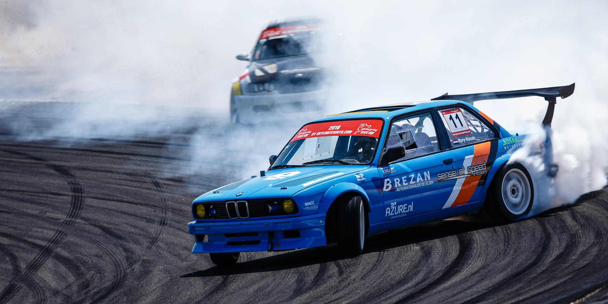
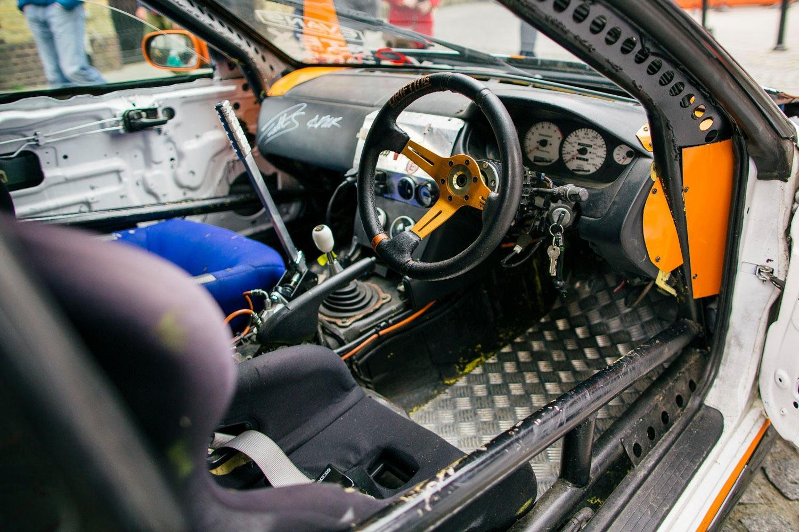
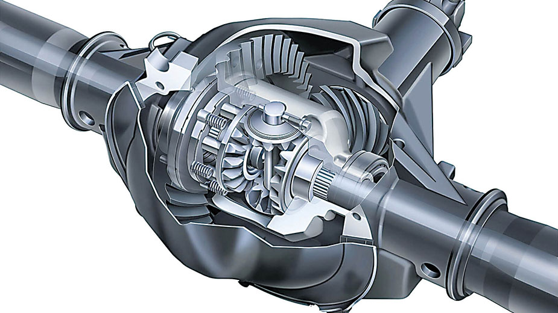

Como preparar um carro para drift?
Nesse post iremos mostrar todos os quesitos a serem seguidos para você preparar o seu
carro e começar a praticar o drift!
Mas, o que é o drift? Basicamente, é uma técnica de deslizar com as rodas traseiras do
carro sobre o asfalto, queimando pneu e fazendo muita fumaça, literalmente fazer o
carro andar de lado.
- Tração Traseira:
O principal quesito para o seu carro começar a fazer o drift, é
ele ser tração traseira. A maioria dos carros são tração dianteira, o que
significa que as rodas da frente puxam o carro, já nos tração traseiras, as rodas traseiras que
empurram o carro.

- Freio de Mão Hidráulico:Consiste em um freio de mão mais forte que o original
do carro, que serve apenas para estacionar. É retrabalhado todo o sistema de pinças
para que o freio seja instalado, podendo assim ser puxado em alta velocidade e assim
travando as rodas traseiras durante a pilotagem.

- Soldar o Diferencial:Basicamente, o diferencial tem como função girar as rodas
de maneira uniforme conforme a inclinação do carro sobre o asfalto. Soldando essa
peça, as 2 rodas irão girar sempre juntas, tornando assim mais fácil para o carro
escorregar de traseira e fazer o drift.

- Pneus:Nesse quesito, vai muito do gosto de cada piloto escolher o pneu que mais lhe
agrada, tanto na qualidade, quanto no preço. Pode não parece tão importante, mas
tenha certeza que vai precisar de no minimo 1 jogo de pneus. Eles costumam gastar
bastante fazendo a prática do Drift, durando até 2o minutos de uso intenso.